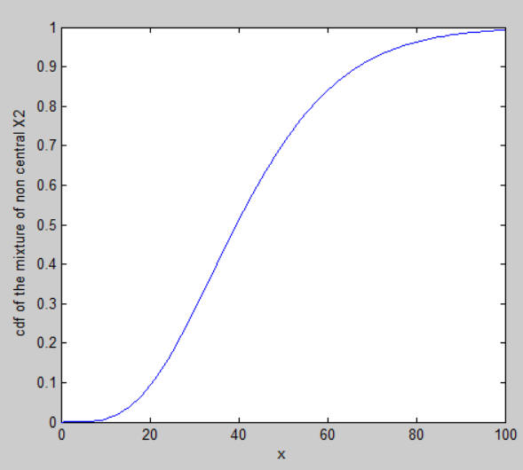

| Flexible Statistics Data Analysis Toolbox™ | |
Cumulative distribution function (cdf) of a linear combination of non-central chi-squared r.v. (+ σ * N(0,1))
More precisely, given Q = λ1 X21 (n1, nc1)+λ2 X22 (n2, nc2)+ ... + λk X2 k (nk, nck)+σ N(0,1), where X2i (ni, nci) i=1, 2, ..., k are k non central chi squared random variables, with non centrality parameters nc1, ..., nck and degrees of freedom n1, ..., nk and λi are real numbers and N(0,1) is a standard normal random variable, the purpose of this routine is to compute FQ(c | df, nc) = P(Q < c) , that is the cdf of Q evaluated at c, where df=[n1,, ..., nck and nc=[nc1, ..., nck)].
p=ncx2mixtcdf(c,n,lb,nc)
p=ncx2mixtcdf(c,n,lb,nc,sigma)
p=ncx2mixtcdf(c,n,lb,nc,sigma,lim,tol)
[p, tracert, ifalse]=ncx2mixtcdf(c,n,lb,nc,sigma,lim,tol)
p=ncx2mixtcdf(c,n,lb,nc) computes the mixture of noncentral chi-square cdf at value c.
ncx2mixtcdf requires the following inputs
c |
scalar, value at which the cdf must be evaluated |
n |
vector of length k containing the degrees of freedom of the k non central chi2 distributions |
lb |
vector of length k containing the coefficients of the linear combinations of the k non central chi2 distributions |
nc |
vector of length k containing the k non centrality parameters of the k non central chi2 distributions |
p=F(Σi=1k lb(i) X2(n(i), nc(i))) where symbol X2(n(i), nc(i)) denotes a non central chi-squared r.v. with degrees of freedom n(i) and non centrality parameter nc(i). p = scalar = value of the cdf of the mixture evaluated at c
p=ncx2mixtcdf(c,n,lb,nc,sigma)
sigma is a coefficient associated with the standard deviation of the standard normal distribution which can be added to the linear combination of non central chi2 distributions. The default value of sigma is 0.
p=F( Σi=1k lb(i) X2(n(i), nc(i)) + sigma N(0, 1) )
p=ncx2mixtcdf(c,n,lb,nc,sigma,lim,tol)
lim and tol are optional parameters which are associated with the required tolrance of the requested output
lim |
scalar which defines maximum number of integration terms. |
tol |
scalar which controls the tolerance. The default value of tolerance is 1e-09 |
[p, tracert, ifalse]=ncx2mixtcdf(c,n,lb,nc,sigma,lim,tol)
tracert and ifalse provide additional details about the output the procedure
tracert |
vector of length 7 containing |
ifault |
scalar which informs about output of the procedure |
Davies R. B. (1973), Numerical inversion of a characteristic function, vol. 60,
Biometrika, pp. 415-417
Davies R. B. (1980), The distribution of a linear combination of X2
Random variables, Applied Statistics vol. pp. 323-333
Evaluate the cdf of the sum of two chi2 r.v. with degrees of freedom 5 and 4 and coefficients of the linear combination 2 and 3 and non centrality parameters 1 and 6
x=35; df=[5;4]; lb=[2;3]; nc=[1;6]; [out]=ncx2mixtcdf(x,df,lb,nc);
out =
0.3989
Evaluate the cdf of the sum of two chi2 r.v. with degrees of freedom 5 and 4 and coefficients of the linear combination 2 and 3 and non centrality parameters 1 and 6. Evaluate the cdf in a series of values of x and plot the output
df=[5;4];
lb=[2;3];
nc=[1;6];
xx=0:1:100;
cdfnc=zeros(length(xx),1);
ij=1;
for x=xx
[out]=ncx2mixtcdf(x,df,lb,nc);
cdfnc(ij)=out;
ij=ij+1;
end
plot(xx',cdfnc)
xlabel('x')
ylabel('cdf of the mixture of non central X2')

| |
nchoosekfs.html | normboxcox.html | |